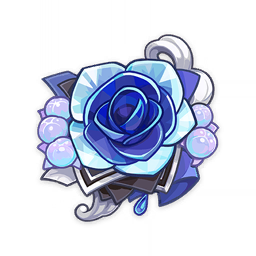

Genshin Impact · Versión 7.2
Análisis del Rol y Escalado
Xianyun (Preservadora de Nubes) es un personaje de elemento Anemo originario de Liyue que utiliza Catalizador y se posiciona en el tier T1.5 (A) Support dentro del rol de Habilitadora Universal de Ataques Descendentes, Healer de Equipo & Buffer de Daño Plano. Su rendimiento en combate gira en torno a este eje principal: Escalado por ATQ Total (Meta: 4,000 – 4,500 ATQ para tope pasiva A4 de 9,000 daño plano).
Para maximizar su aporte en el equipo, la configuración prioritaria combina Reverberación de la Grulla con el conjunto de artefactos Sombra Verde Esmeralda (4 piezas), respetando la jerarquía de estadísticas 1. Recarga de Energía% (170% - 200% ER) > 2. ATQ% y ATQ Plano (Meta: acercarse a 4,000+ ATQ) > 3. Prob. Crítica (si usa Favonius) y subiendo sus habilidades en orden: Definitiva (Q) >>> Habilidad Elemental (E) >>> Ataques Normales (No subir).
Mejores Armas
Opciones recomendadas ordenadas por rendimiento según el meta actual y compatibilidad con sus rotaciones:
-
 Reverberación de la Grulla ★★★★★Opción por rol+741 ATQ Base descomunal, +28% daño en Ataques Descendentes para el equipo y recarga.
Reverberación de la Grulla ★★★★★Opción por rol+741 ATQ Base descomunal, +28% daño en Ataques Descendentes para el equipo y recarga. -
 Ojo del Juramento ★★★★Opción por rol+27.6% ATQ y +48% Recarga de Energía al usar su Habilidad Elemental.
Ojo del Juramento ★★★★Opción por rol+27.6% ATQ y +48% Recarga de Energía al usar su Habilidad Elemental. -
 Códice de Favonius ★★★★Opción por rolResuelve cualquier problema de recarga para lanzar la Definitiva cada rotación.
Códice de Favonius ★★★★Opción por rolResuelve cualquier problema de recarga para lanzar la Definitiva cada rotación. -
 Fluencia Impoluta ★★★★Opción por rolForja de Fontaine con 565 ATQ Base y bono de ATQ%.
Fluencia Impoluta ★★★★Opción por rolForja de Fontaine con 565 ATQ Base y bono de ATQ%.
Mejores Sets de Artefactos
Combinaciones de 4 piezas o mezclas de 2 piezas para maximizar su contribución:
-
 Sombra Verde Esmeralda (4 piezas) BiS Universal
Sombra Verde Esmeralda (4 piezas) BiS Universal-40% RES Elemental para el carry Pyro, Hydro, Electro o Cryo.
-

Canción de Días Pretéritos (4 piezas) Alternativa XiaoSuma daño plano adicional a los saltos de Xiao o personajes Anemo/Geo.
Estadísticas Principales y Secundarias
Atributos prioritarios en artefactos para un balance óptimo de daño o soporte:
| Pieza | Estadística Principal |
|---|---|
| Reloj (Arenas) | Recarga de Energía% o ATQ% |
| Cáliz | ATQ% |
| Corona | ATQ% (o Bono de Curación) |
Prioridad de Subestadísticas
- 1. Recarga de Energía% (170% - 200% ER)
- 2. ATQ% y ATQ Plano (Meta: acercarse a 4,000+ ATQ)
- 3. Prob. Crítica (si usa Favonius)
Prioridad de Talentos
Definitiva (Q) >>> Habilidad Elemental (E) >>> Ataques Normales (No subir)
Objetivos de Estadísticas (Nivel 90)
Las metas numéricas exactas de Xianyun (Preservadora de Nubes) varían según el arma equipada, los refinamientos y la generación de partículas de su equipo.
Prioriza cumplir primero la Recarga de Energía necesaria para mantener la rotación fluida de su Habilidad Definitiva antes de buscar subestadísticas ofensivas adicionales.
Con piezas principales de Recarga de Energía% o ATQ%, ATQ% y ATQ% (o Bono de Curación), enfoca tu farmeo de artefactos en: 1. Recarga de Energía% (170% - 200% ER) > 2. ATQ% y ATQ Plano (Meta: acercarse a 4,000+ ATQ) > 3. Prob. Crítica (si usa Favonius) (Escalado por ATQ Total (Meta: 4,000 – 4,500 ATQ para tope pasiva A4 de 9,000 daño plano)).
Talentos de Combate y Materiales (Nivel 1 al 10)
Habilidades principales de Xianyun (Preservadora de Nubes) y desglose exacto de libros, materiales y Mora para mejorar sus talentos:


Composiciones de Equipo Recomendadas
Alineaciones con mayor sinergia elemental y amplificación de daño en el Abismo y Teatro Fantasía:
Xiao Plunge Premium
Xiao • Xianyun • Faruzan • Furina
Materiales de Ascensión (Nivel 1 al 90)
Recursos totales requeridos para desbloquear las 6 fases de ascensión de Xianyun (Preservadora de Nubes). Coste total de Mora en ascensiones: 420.000 Mora.


Sinergias y Guías Relacionadas
Explora las fichas de armas, artefactos y materiales de los principales compañeros de equipo para Xianyun (Preservadora de Nubes):